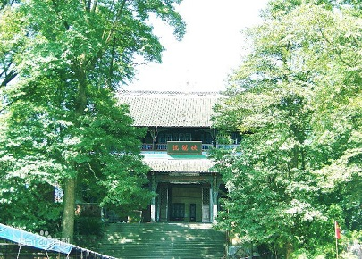
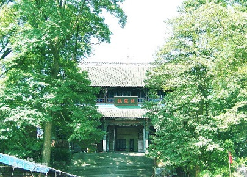
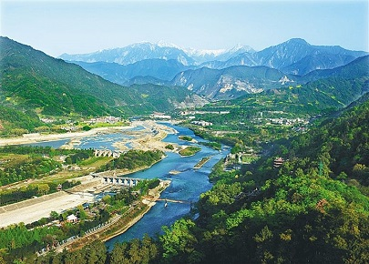
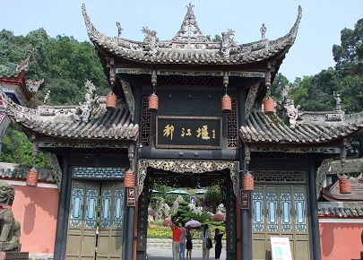

morly旅游网
是宜与长城，并赞秦皇代。长城久失用，徒留古迹在，不如都江堰，万世资灌溉
都江堰位于四川省成都市都江堰市城西，坐落在成都平原西部的岷江上，始建于秦昭王末年（约公元前256～前251） [1] ，是蜀郡太守李冰父子在前人鳖灵开凿的基础上组织修建的大型水利工程，由分水鱼嘴、飞沙堰、宝瓶口等部分组成，两千多年来一直发挥着防洪灌溉的作用，使成都平原成为水旱从人、沃野千里的"天府之国"，至今灌区已达30余县市、面积近千万亩，是全世界迄今为止，年代最久、唯一留存、仍在一直使用、以无坝引水为特征的宏大水利工程，凝聚着中国古代劳动人民勤劳、勇敢、智慧的结晶。
都江堰市属中亚热带季风湿润气候区，年均气温15.2℃，年均降水量近1200毫米，年均无霜期280天。这里四季分明，夏无酷暑，最热的7、8月份平均气温为24℃左右，平均最高气温仅28℃。冬无严寒，最冷的1月份平均气温为4.6℃，平均最低气温在1℃左右。
秦蜀郡太守李冰建堰初期，都江堰名称叫“湔堋”，这是因为都江堰旁的玉垒山，秦汉以前叫“湔山”，而那时都江堰周围的主要居住民族是氐羌人，他们把堰叫做“堋”，所以都江堰就叫“湔堋”。
岷江鱼嘴分水工程
鱼嘴分水堤又称“鱼嘴”，是都江堰的分水工程，因其形如鱼嘴而得名，它昂头于岷江江心，包括百丈堤、杩槎、金刚堤等一整套相互配合的设施。其主要作用是把汹涌的岷江分成内外二江，西边叫外江，俗称“金马河”，是岷江正流，主要用于排洪；东边沿山脚的叫内江，是人工引水渠道，主要用于灌溉。
飞沙堰溢洪排沙工程
飞沙堰溢洪道又称“泄洪道”，具有泻洪、排沙和调节水量的显著功能，故又叫它“飞沙堰”。 飞沙堰是都江堰三大件之一，看上去十分平凡，其实它的功用非常之大，可以说是确保成都平原不受水灾的关键要害。飞沙堰的作用主要是当内江的水量超过宝瓶口流量上限时，多余的水便从飞沙堰自行溢出；如遇特大洪水的非常情况，它还会自行溃堤，让大量江水回归岷江正流。飞沙堰的另一作用是“飞沙”，岷江从万山丛中急驰而来，挟着大量泥沙、石块，如果让它们顺内江而下，就会淤塞宝瓶口和灌区。 古时飞沙堰，是用竹笼卵石堆砌的临时工程；如今已改用混凝土浇铸，以保一劳永逸的功效。
 

二王庙
二王庙位于岷江右岸的山坡上，前临都江堰，原为纪念蜀王的望帝祠，齐建武（公元494～498年）时改祀李冰父子，更名为“崇德祠”。宋代（公元960～1279年）以后，李冰父子相继被皇帝敕封为王，故而后人称之为“二王庙”。庙内主殿分别供奉有李冰父子的塑像，并珍藏有治水名言、诗人碑刻等。建筑群分布在都江堰渠首东岸，规模宏大，布局严谨，地极清幽。是庙宇和园林相结合的著名景区。占地约5万余平方米，主建筑约1万平方米。二王庙分东、西两菀，东菀为园林区，西菀为殿宇区。全庙为木穿逗结构建筑，庙寺完全依靠自然地理环境，依山取势，在建筑风格上不强调中轴对称。
伏龙观
伏龙观位于离堆公园内。其下临深潭，传说因李冰父子治水时曾在这里降伏孽龙在离堆之下，故于北宋初年改祭李冰，取名“伏龙观”。现存殿宇三重，前殿正中立有东汉时期（公元25～220年）所雕的李冰石像。殿内还有东汉堰工石像、唐代金仙和玉真公主在青城山修道时的遗物——飞龙鼎。伏龙观又名老王庙、李公词、李公庙等。清同治五年(公元1866年)四川巡抚祟实以为：“于虽齐圣，不先父食。况以公之贤：又有功于蜀，其施力程能固无待乎其子。今乃数典忘祖，于掩其父得无紊钦?”
 内容整理至网络，如有侵权，请联系我们！1255394075@qq.com